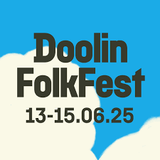
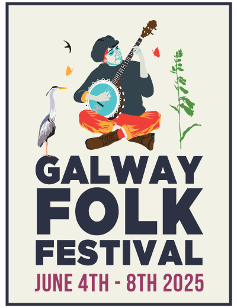
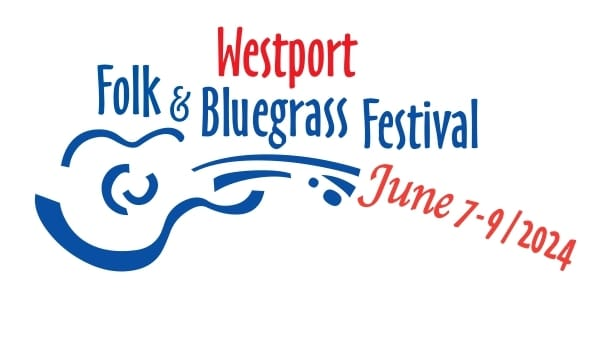
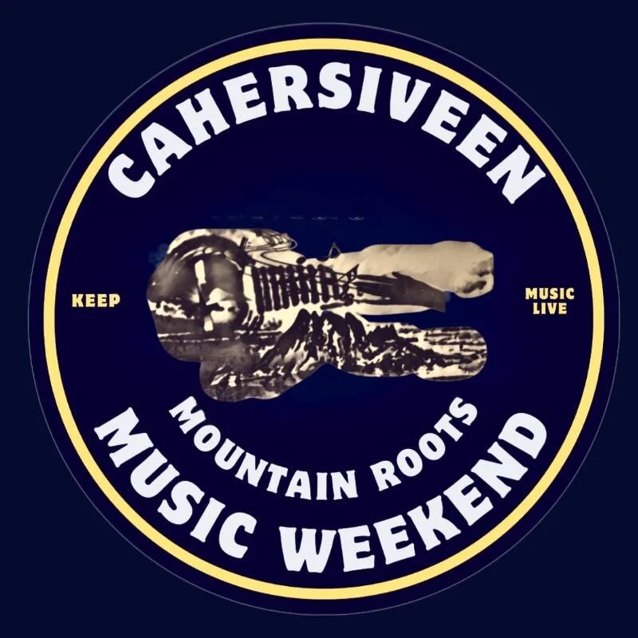

<section id="special-events" class="py-16 md:py-20 lg:py-24 bg-stone-50 border-y border-stone-200">
  <div class="container mx-auto px-4 sm:px-6">
    <h2 class="text-3xl md:text-4xl lg:text-5xl font-bold text-center text-primary mb-4">
      Festivals & Special Events
    </h2>
    <p class="text-center text-lg text-gray-600 max-w-4xl mx-auto mb-12">
      We love taking part in festivals around Ireland. Here are some of our favourites we've been to, and hope to see again!
    </p>

    <!-- Festival Logo Carousel -->
    <div class="swiper festival-carousel">
      <div class="swiper-wrapper">
        <div class="swiper-slide">
          
        </div>
        <div class="swiper-slide">
          
        </div>
        <div class="swiper-slide">
          
        </div>
        <div class="swiper-slide">
          
        </div>
        <div class="swiper-slide">
          
        </div>
      </div>
      <div class="swiper-pagination"></div>
    </div>

    <!-- List for upcoming special events -->
    <div id="event-list" class="max-w-4xl mx-auto space-y-8 mt-12"></div>
  </div>
</section>
